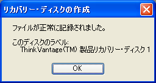
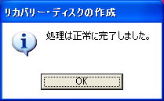

ThinkPadのリカバリディスクを作成する
Lenovoから発売されているThinkPadシリーズに限らず， 最近のPCはリカバリデータ（PCを工場出荷状態に初期化するためのデータ）をHDDに格納しています． この方式は「HDDリカバリ」や「Disk-to-Disk」などと呼称されることもあります． しかし，HDDはPCの故障原因となることも多く，リカバリディスクはDVDなどの光学メディアとして持っておきたいと思う方も多いと思います． 光学メディアにリカバリデータをバックアップをしておけば，HDDが故障しても，HDDを交換するだけで自力で復旧できるからです．
HDD内にリカバリデータを保持しているPCは，ThinkPadに限らず，そのリカバリデータを光学メディアにバックアップするためのソフトウェアが添付されています． おそらく，購入時に添付されていた説明書にもリカバリディスクの作成方法を解説するページが含まれているはずです． 今回は，ThinkPadシリーズのノートPCのリカバリディスクを作成する機会がありましたので，ThinkPadシリーズにおけるリカバリディスクの作成方法を掲載します． 参考程度にご覧ください．
対象機種
今回はThinkPad X61 7673-3NJにおけるリカバリディスク作成例を掲載します． ThinkPadシリーズであれば，ほぼ同様の操作でリカバリディスクを作成できると思います．
| 対象機種 | Lenovo ThinkPad X61 7673-3NJ |
|---|---|
| OS | Microsoft Windows XP Professional Service Pack 2 |
作成手順
準備
書き込み可能な光学ドライブを搭載していないモデルの場合は，USB接続の光学ドライブを用意してセットアップを完了しておきます． ThinkPad X61は光学ドライブを搭載していないため，私は下記の製品を用いてリカバリディスクを作成しました． また，リカバリディスク作成中に安定した電源供給ができるように，バッテリを充電し，ACアダプタを接続した状態にしておきます． ブランク（何も書き込んでいない空，新品）のDVD-RまたはCD-Rを用意します．CD-Rは必要枚数が多くなってしまうので，DVD-Rの購入をお奨めします． モデルにより必要枚数は異なりますが，私の場合ですとDVD-Rが2枚必要でした．
| 光学ドライブ | I-O DATA DVRP-U8XLE |
|---|---|
| 光学ディスク | TDK DVD-R 4.7GB データ用 2枚 |
「Create Recovery Media」を起動する
「スタート」-「すべてのプログラム」から「ThinkVantage」を選択し，「Create Recovery Media」を選択します．
リカバリディスクを作成する
下のようなウィンドウが表示されるので，「Product Recovery ディスクを作成する」を選択して「OK」を選択します．

処理が開始されるので，しばらく待ちます．
リカバリディスクの作成に使用する光学ドライブを選択します．DVD-RやCD-Rに書き込み可能な光学ドライブである必要があります．
ブランクのDVD-Rを光学ドライブにセットし，「OK」を選択します．
DVD-Rへの書き込みが開始されます．書き込み後は書き込みデータの検証が実行されます． メッセージが表示されるまで，しばらく待機します．このとき，他のアプリケーションを操作しないほうが無難です．
1枚目の書き込みが完了しました．「OK」を選択します． 続いて，同様の操作で2枚目の書き込みも行います．
2枚目の書き込みが完了しました．「OK」を選択します．
必要枚数分の書き込みが完了すると，下のようなメッセージが表示されます．「OK」を選択します．
全ての処理が完了すると，下のようなメッセージが表示されます．「OK」を選択します． これでリカバリディスクの作成は完了です．お疲れ様でした． ディスクを混同したり，間違って廃棄したりすることがないように注意して管理してください．
